The design language of driftwood.sh and the product behind it: onboarding, the
dashboard and the storyboard editor. One tide-blue accent, and an ASCII sea with a rubber duck in it.
Product the app clients use after they signSite the marketing site
driftwooddemo-led outboundlive
Colour
Copied from the shipped CSS. The site and the dashboard share one set, defined twice
and kept in sync, and the product adds a panel-blue ground for its white widgets.
Ground & ink
Ground--color-paper#FFFFFFSite pages, onboarding, the menu column, widgets
Ink--color-ink#16181BTitles, names, big numbers
Ink soft--color-ink-soft#6A737DBody, widget labels, the quiet line
Gray light--gray-light#9AA2ABDecorative only; under AA for labels
Line--color-line#E9EBEEEvery hairline
Redaction bar--redact#D4D9DENames and companies we withhold
The one accent
If a design wants a second accent colour, the design is wrong. Brand colours inside a demo stay inside its window.
Tide--color-tide#15557EThe way on, the current place, bars and lines
Tide deep--color-tide-deep#0D3C5BHover, and the Face & Voice card
Tide wash--color-tide-wash#EAF1F7Chips, the current menu item, mics, done discs
Number blue Product--pl-num-blue#2A73A8The number under the pointer, and changes beside names
Wash A Site--wash-a#F4F8FBSection sheet tint, sparingly
Product grounds & edges Product
The dashboard is a white menu column on a panel-blue page, its widgets white on a soft lift.
Panel blue.pl-page:has(.pl-menu)#F4F6F8The dashboard and storyboard page
Menu hairline.pl-side#E6EAEEThe menu column's edge
Edge--sv-edge#D3D9DFOutlined pills, the round back
Sand--color-sand#EEF2F5Quiet chips
Greeting blue.pl-face-cta-hi#9EC7E4"Welcome, Marc" on the dark card
Night.pl-launch::beforergb(5 20 32 / .9)The launch's night, fading in over 900ms
Lit tideLaunchScene.tsrgb(126 182 219)The sea's ASCII at night
Status
OK--color-ok#197142Live and active dots only
Alert--color-alert#B42318One needs-attention dot on internal admin cards
Red isn't in the product paletteInside the pilot every alert reads as ink. Errors, Cut and Disconnect use ink and graphite, and decisions use a tide wash and a tick.
Scenery palette: a weathered coast
The sea's cast has its own settled palette. One terracotta covers crab, buoys and coconut, and the ducks stay rubber-duck yellow, always.
Duck (protected)--duck#F0C33C
Duck beak--duck-beak#E08A2E
The one terracotta--terracotta#B25E42
Palm, sea-glass--palm#657D6A
Sand, wet--sand-wet#B0956A
Sand, dry--sand-dry#CEBA92
Splash blue--splash#3F7EA9
Type
Public Sans for everything you read and press, Source Serif 4 only
for the wordmark. The product holds one scale with two weights: 400 to read, 600 for names and numbers.
The product scale Product
Triggers
page title · 1.75rem · 600 · −0.02em · a page's first heading is its title, whatever tag it uses
Pipeline
section title · 1.25rem · 600
Dana Whitfield, Meridian · Same-day booking is dropping reservations
body · 0.92rem · 400 · a card title is body set 600
2 replied · 3 opened · 4 sent · 3 queued
small · 0.8rem · axis values, chips, the range track
472
big number · 3.75rem · 600 · −0.03em · tabular · every big number the same size, the hero of its widget
Line things up by where the pixels stopA big numeral carries more side space than the label over it, so it is pulled back by the measured difference until "472" and "Sent" share a left edge in ink.
Spacing follows meaningA line sits close under its own title (0.35 to 0.5rem); separate groups sit a full gap apart; a page heading gets twice the gap. Inner pages carry no serif flourishes.
The site Site
Ship tailored demos
hero H1 · Public Sans 620 (a real variable-font notch above 600) · −0.028em · one step above the shared scale
Don't send your leads slop
section heading · shared scale · 600 · −0.014em · one voice phrase per heading, on the phrase that carries the meaning
driftwood
wordmark · Source Serif 4 · 600 · 1.18rem · +0.005em · always beside the HelmMark tile, on the site, the dashboard and the email
The agent researches each prospect, builds them a working custom demo, and sends it from your own account.
body · Public Sans 400 · 15/22
Every message is human reviewed before it sends
label · 0.85rem · gray, the AA floor for information · sentence case · no pills, caps or mono
Spacing & shape Product
One spacing system on every dashboard page, inner pages included. Corners are round and soft, every button a full pill.
Spacing
0.4rema line under its own title
1.5rembetween widgets, and under a panel's title
1.75reminside a widget
2remmenu to widgets, and widgets to the window's edge
2.5reminside a panel
3remunder a page's heading and its line
4rembetween panels
Corners
Widget · 1.2rem
Panel · 1.75rem
Field · 0.8rem
Pill · every button, chip and track
Site window · 12px
Nested corners nestAn outer radius is the inner one plus the gap between them, so a thumb in a track and a field in a widget share one curve.
Elevation
Depth is built from stacked layers, each doubling the blur and shedding alpha. Premium means gradual shading.
Liftwidgets, cards and the menu's popovers · four layers, ≤0.04 alpha
Raisea tile being dragged, a spoken note · three layers
Windowsite artifacts and screenshots Site
Bars
Bars and columns are solid. Each rounds its top corners by 12% of its own width, so thin day bars read nearly square and wide columns softly round.
Icons
Every icon is a drawn SVG shape, centred on its box. Glyphs sit where their font puts them, so ‹ × ✓ ▶ drift off a button's centre.
Back
Play
Close
Connected
Add
Upload
Mic
Cut
Checked in codeThe CSS test fails on any icon character in the source or a CSS content:, and the QA walk measures every icon-only button's shape against its centre (±1px).
An icon says what comes inUpload is an arrow into a tray, because leads arrive as a sheet. Add is a +, small and flat.
When in doubt, a labelEdit is the word Edit on an outlined pill, ink on a darker outline so it reads at a glance.
Logos fill their badgeEach channel wears its own mark at its own size on its brand colour. Filters use the monochrome marks in ink.
Onboarding Product
Four steps the founder walks through with a new client on the kickoff call. Questions about the product stay on the call, where a person can ask follow-ups.
1Sign indone
2Connect accountsskipped
3Add leads
4Invite team
Who should get your demo?
Upload a sheet of leads.
Drop a CSV or Excel file
Specimen built from pilot.css. The step's copy here is a placeholder for the layout.
Progress like TurboTaxA sidebar of numbered sections. A section turns bold only once its work is done; pressing past it is a skip, and a skipped section stays plain.
Back bottom left, the way on bottom rightOne row docked just under the tallest step (37rem from the top), as wide as the step's object (44rem). Back is the outlined twin of the way on, and the line along its top fills in tide.
One centred column, one objectHead, the object, at most one control, the main button. Each step is centred on the whole screen, whatever the sidebar takes.
Steps sit on the pageNo box around a step. Regions hold a fixed size and stay top-aligned, so the step keeps still as things land in it.
The four steps
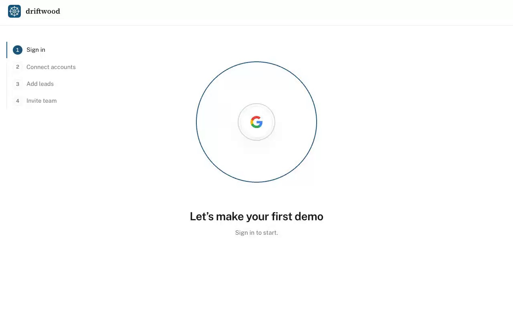
1 · Sign in. Google is the only sign-in, so it sits at the centre of the helm. Sign-in stays bare, with no progress line.
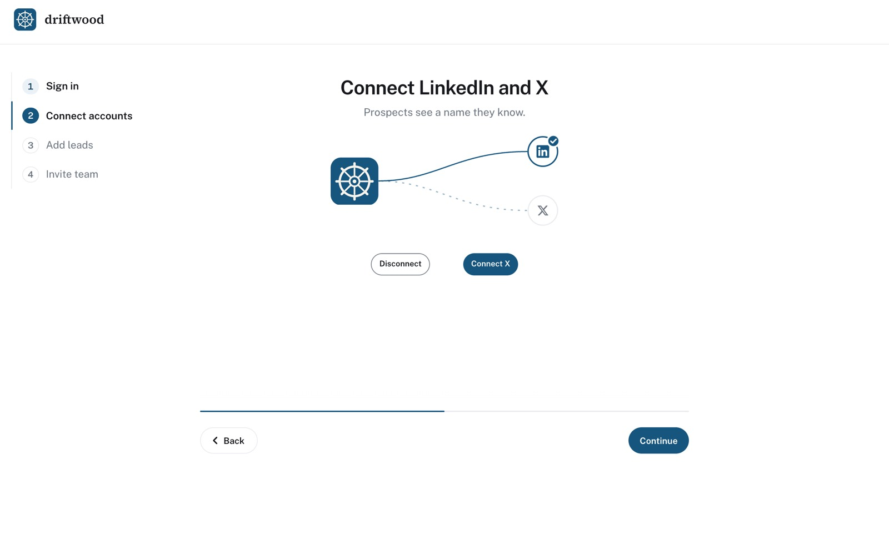
2 · Connect accounts. The helm diagram over two buttons. LinkedIn and X each sign in in a small window over the page and land you back connected. Disconnect turns into Undo for five seconds.
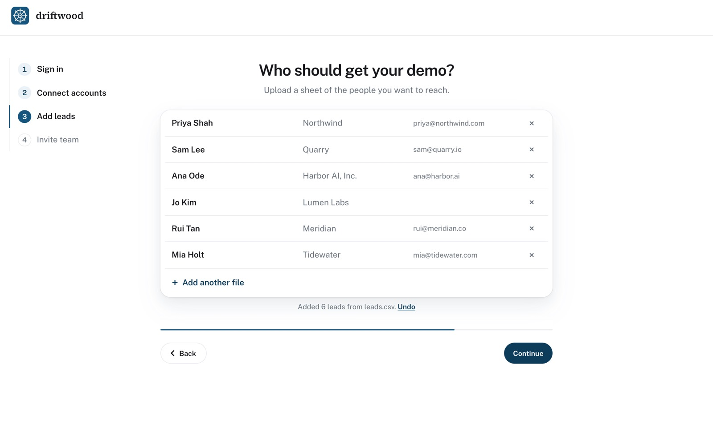
3 · Add leads. Upload a sheet, CSV or Excel. The sheet is the drop zone, fixed in size, its rows scrolling on their own track. Every row has an ×; an upload has Undo.
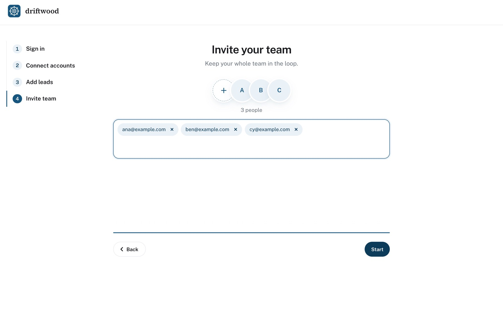
4 · Invite team. Addresses wait as chips with an ×, free to take back. Start pilot names what happens next: Driftwood's team makes the first demos.
The launch: night arrives gently
The first Publish turns the page to night in the sea's ASCII. The blue fades in evenly over 900ms on the card's own easing, landing with the card; the stars follow.
The shipped launch at 0, 150, 450 and 900ms. An earlier version went dark in one frame; the designer called it "so sudden", so the night became one even fade.
Darkness never arrives at onceA sudden dark or flash can hurt. Night comes up as one even blue over the whole page, the stars after it. The paper that rolls into the bottle is a clean sheet with the faintest grain.
Dashboard Product
Home shows how the demos are doing, and the detail sits one press away. A white menu column on a panel-blue page, with white widgets on a soft lift.
The menu: twelve items to six
Clients said the old dashboard overwhelmed them. The menu now holds what people come for, actions first.
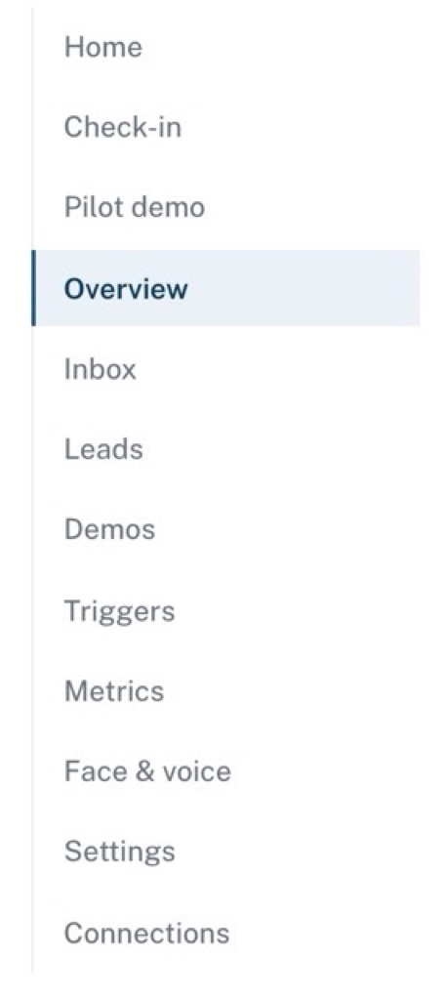
Before: 12 items, tabs inside tabs
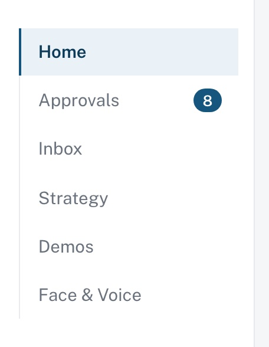
After: 6 items
Home, Approvals, Inbox, Strategy, Demos, Face & Voice. Grouped by what you came to do. A tab names one place, with no second row of segments.
Approvals counts what waits, so what needs you is answered before a click.
Face & Voice stays until it's recorded, then moves under Demos.
Set-up lives behind your name at the menu's foot: sending accounts, team, assets, integrations.
The menu is the frame. Logo on top, you at the foot, held in view as the page scrolls, with no header bar. Names in title case.
Widget anatomy
Every Home widget reads top down the same way. Point at the widget and its number turns blue; point at a bar and the bar becomes the number.
Pipeline
Sent
87%
472
Last month
40200
Sep 10Sep 17Sep 24Oct 1
Values from the shipped demo account (Marc Andreessen, example workspace).
A quiet label, soft and regular, with the change on the period before beside it in plain words.
The big number, 3.75rem, ink until the pointer arrives.
One quiet line of context: the range, a rate, or who leads.
Then the chart or list. Values on every gridline, dates along the foot, a faint dashed line where each week starts.
The range is a seen control: a sunken track with the pick on a raised white thumb that glides (460ms, a soft settle). 1w and 1m read day by day.
Each week on its ownCheck-in numbers are graphs over time, never running totals. A readout names what and when.
Sizes vary by weightSent and Meetings are wide, Opened and Replies narrow; triggers stand as tall as their share of leads.
Pointing at one thing lights it everywhereHover a demo style and its bar, line and table row light up together.
Every compared thing is drawn and namedThree demos means three lines, named in a key by their stroke: solid tide, pale, dashed.
Every widget is a doorSent and Replies open their Inbox tab, Opened and Meetings the detail, a trigger its page.
Lists never rest slicedLong lists fade at their edges and come to rest on a whole row, with room around every row.
Home, in three sections
Home follows what clients asked the dashboard for, in the order they asked, one section each.
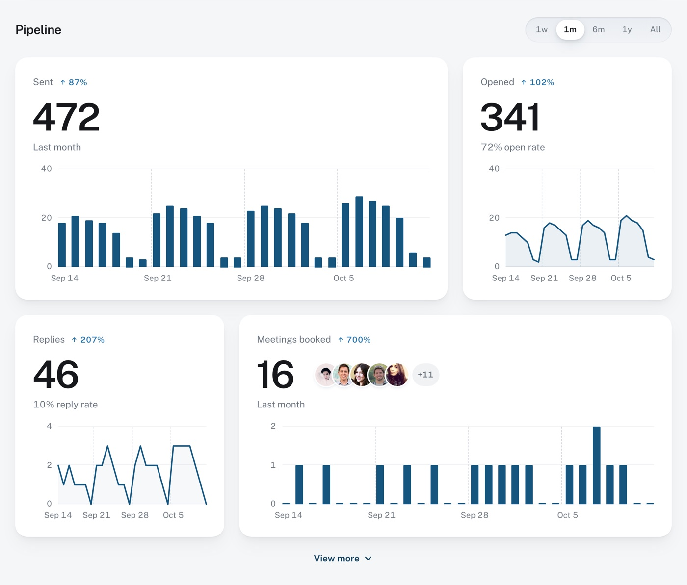
Pipeline. How demos are doing, down to meetings. Asked for by 8 people.
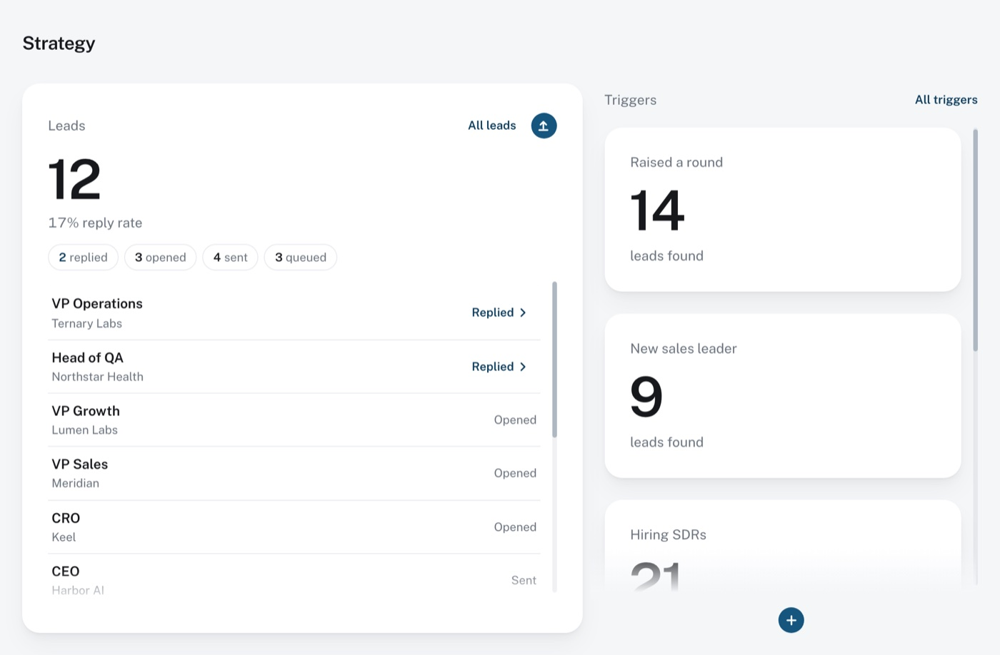
Strategy. Leads and triggers, to change the approach. Asked for by 5.
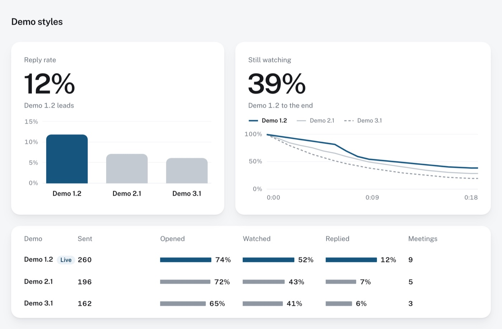
Demo styles. Which demos are going better. 2 thought of it on their own; 4 more said yes when asked.
Approvals
Each card holds the lead, the demo and the message. The decision is the one tide pill; everything else is outlined.
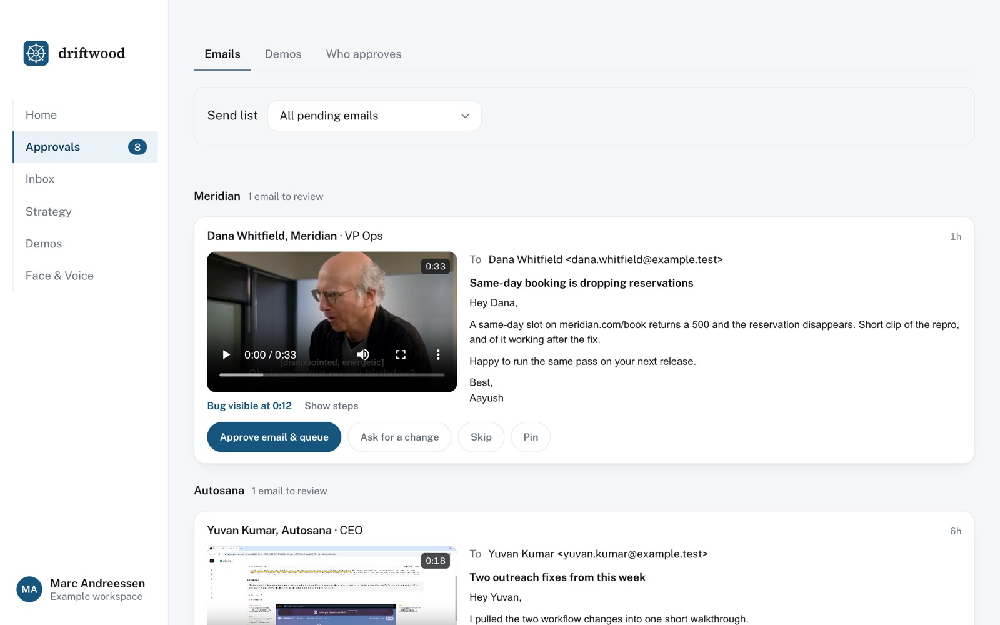
Emails. Grouped by company, the demo beside its message.
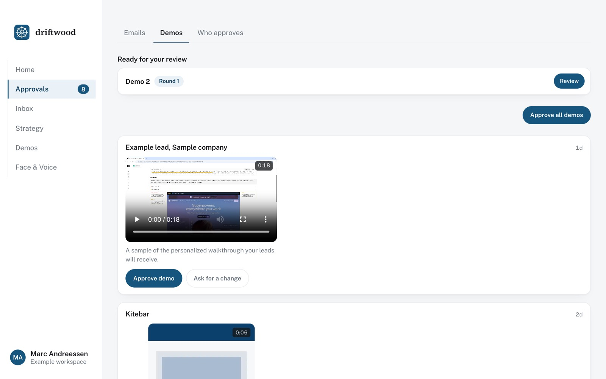
Demos. What's ready for review sits on top, with Review as its way on.
Triggers
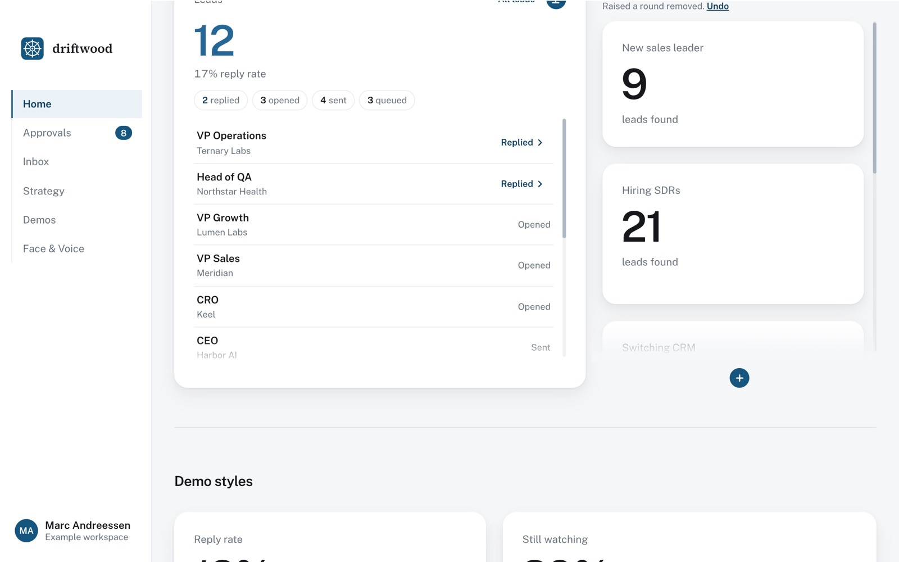
A trigger swiped away, Undo right where it was.
Each trigger is its own widget: its name, leads found, and what it watches on hover.
Swipe left to delete. "Delete" shows behind the card as it's pulled; a short pull springs back; Undo waits five seconds.
Add where the list ends: the + sits centred at the foot of the column, and its field opens there.
On a phone
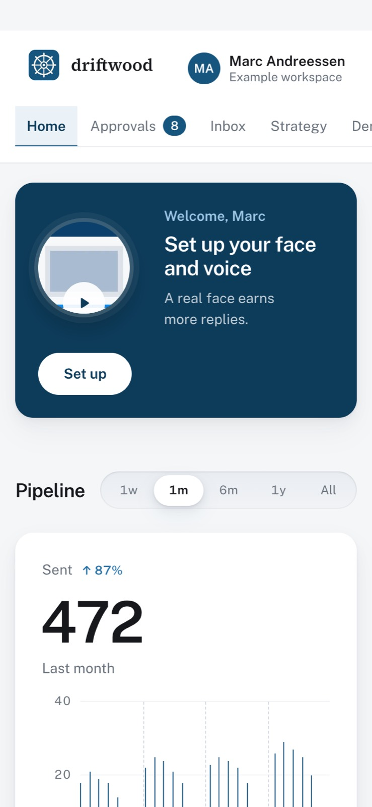
Home at phone width
The logo and you sit side by side, with the menu as a row under them, its current place underlined in tide.
Widgets stack in one column and keep their reading order.
The range track fills its row.
A row that outgrows its widget scrolls sideways, fading at the edge, before the widget grows.
Face & Voice Product
Recording a face moved out of onboarding, so the ask lands right after the call. One dark card on Home, and the same card by email.
Welcome, Marc
Set up your face and voice
A real face earns more replies.
The one dark thing on HomeA full-width tide-deep card above Pipeline. The first task stands out in the palette's own deepest blue.
A porthole with a welcomeA ringed 8.5rem porthole plays a welcome from the founder, who greets each client by name.
Stays until it's recordedIt goes once the voice is ready. Home waits for the face status before drawing, so the card never pops in.
One white buttonSet up, on the tide, opens Face & Voice. One way on.
How Home should remind them
Two designs, tested with 8 people.
Alert widget at the top of Home6
Pop-up by the Face & Voice tab2
The email
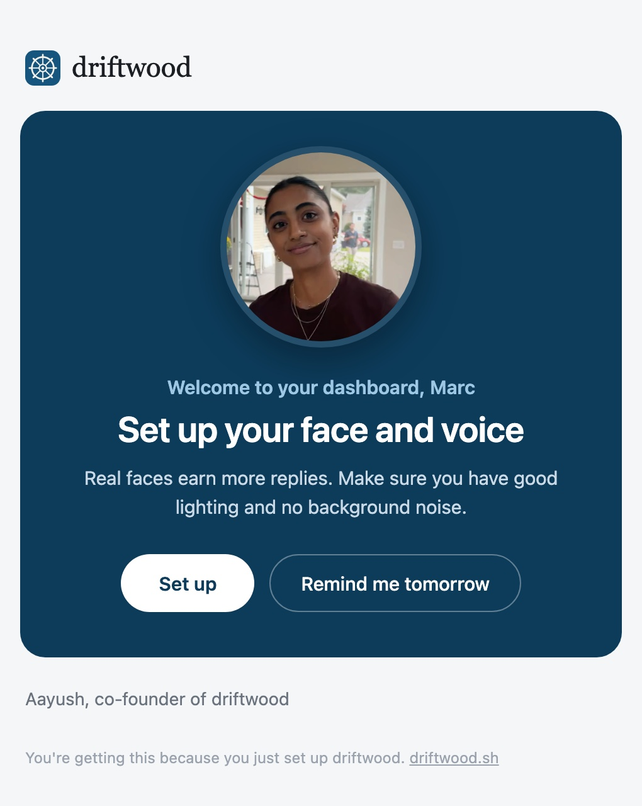
The email that lands after the kickoff call
The same card as the widget, so the email and Home read as one ask.
Two choices: Set up, or Remind me tomorrow. With Set up alone, 2 people opened the email and left it. Remind me tomorrow brings it back to the top of the inbox at a better time.
Signed by the founder, who built the trust in person on the call.
Built for email: tables, inline styles, a bulletproof button, no web fonts, SVG or video.
Face set-up went from 60% in 1–2 weeks to every client in 2–3 days.
Storyboard editor Product
Clients edit the pilot demo themselves, shot by shot, in the place of Slack threads. One action carries every decision. Try it: edit a line, use a mic, cut a shot.
Demo 2
Version 1
Finds where people drop off in their sign-up, then shows the fix.
0:06 / 0:18
3
The cause
Says
The email check times out on a slow network, and the form clears itself.
Listening…
On screen
The form resets after eight seconds, with no message.
Shots6 shots
Specimen rebuilt from storyboard.css. Shot names and lines are the shipped sample demo's.
The way back sits on the title rowAn icon-only round back, level with the name. The Version chip opens the other versions; the recap travels with the name.
One action: Publish ↔ Make version NPublish approves every shot as made. Any edit or cut turns it into Make version N, so per-shot Approve, Change and Cut buttons went.
Says and On screen, each with a micEdited in place. A spoken note shows Listening… while words arrive, then Your note to fix, Discard or Apply.
Edited, with RevertA changed shot wears an Edited badge in the strip, and Revert appears beside its field.
Cut has Undo in its placeFor five seconds, right where the shot was. The "Are you sure?" dialog went.
Drag to reorderThe tile lifts on the raise shadow and the others slide. Alt+Arrow moves and Delete cuts from the keyboard.
Fields stay two lines tallA long line scrolls inside its field, so the Shots strip stays above the fold on a laptop.
A new shot waits dashedSomething still being made waits in its place and can't be opened.
Shipped
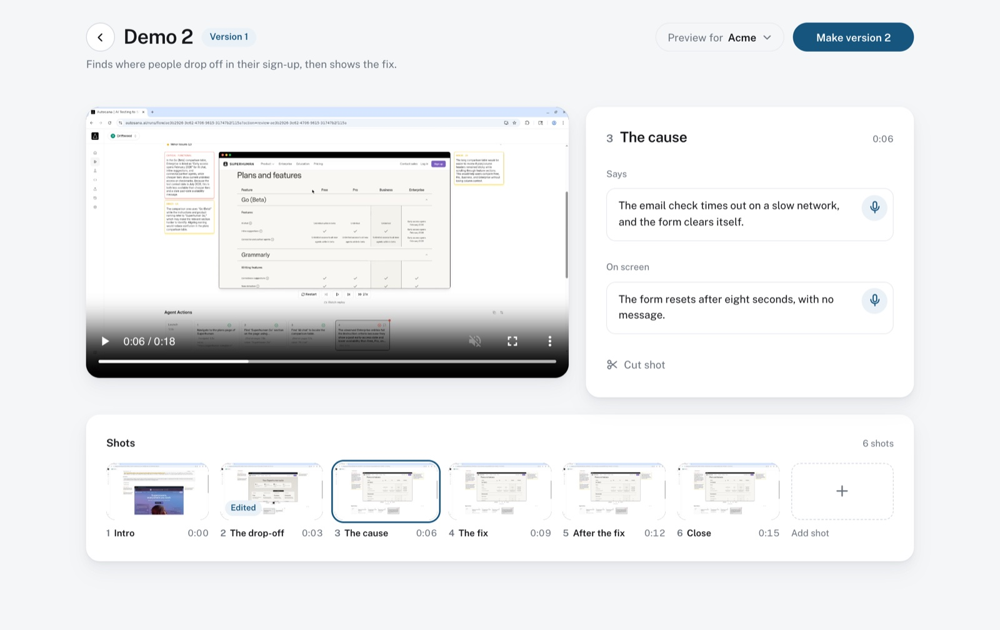
The editor. The video beside the selected shot, the strip under them.
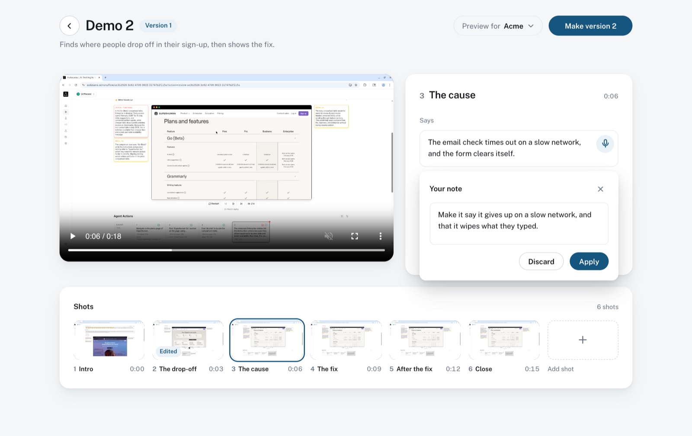
Your note. The spoken words, fixed by hand before Apply.
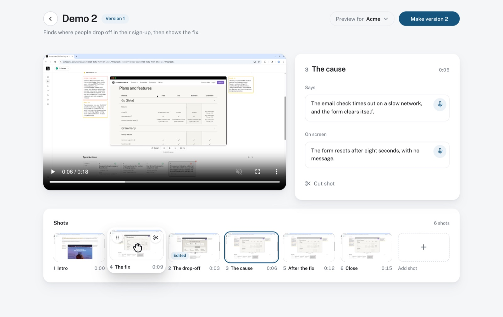
Drag. The tile lifts; the others make room.
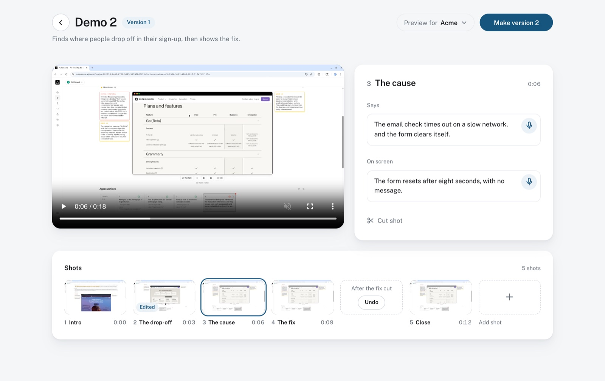
Cut. Undo waits where the shot was.
Interaction patterns Product
The principles behind every screen, each learned from a real miss across 66 logged iterations. People act with confidence when every step is safe.
Undo right where it happenedA costly action shows at once and its button becomes Undo for a few seconds. Adding is free to take back.
Instant responseThe screen reacts straight away and the real work happens quietly. "Disconnecting…" for five seconds felt slow.
Two choices at most at the bottomOne main button and one quiet way back. Back sits bottom left and the way on bottom right, in one place on every step.
One way onTwo controls that do the same thing is one too many. The way forward appears once it's possible.
Everything holds stillRegions keep their size whatever they hold. A frame swaps its contents and keeps its corners and shadow. The menu stays put.
Calm, restrained motionWords soften out, then the object moves, then new words come in. Each turn moves its own way; letters and faces never spin.
Never strand people in another tabA sign-in that can't redirect back opens as a small window over the page and lands you where you were.
Delight lives in the sea, sparinglyThe log sails while a demo is made; the first Publish gets fireworks, a bottle and a splash. The cast is water creatures only.
A popup you open staysUntil ×, Escape or a click outside, so it can be read and scrolled. A panel that slides in can be swiped away.
Secondary looks secondaryOnly the way on looks recommended. A decision is quiet and whole: a raised white thumb, a tide wash and a tick.
Respect a skipA skipped step is never asked for again. Heavy asks, like recording a face, come later by email.
Every button has its whole journeyRest, hover, pressed, keyboard focus, disabled, and busy, its label saying so: "Opening…".
Words
Short, plain and true to what happens next. The theme lives in the visuals, so the copy stays simple.
Value first, in their wordsA real face earns more replies.Prospects see a name they know.
Two lines at most under a heading
Widen the line before adding one. Shorter wins.
Sign in to start.
Never the word "nothing"
It reads as AI-written. Filler goes too.
Nothing else to set upYou're all set
No contrast sentences
No "X, not Y", "rather than" or "instead of". Say the good thing plainly.
…so nothing waits on you
Buttons are one or two words
And they name what really happens.
Start pilotCreate your first demo
No orphan words
A paragraph, caption or heading never ends on a line of one word. Running text wraps pretty; headings balance.
A title needs no line under it
The page already shows what it's for. A line stays only where it names the next step.
Sent messages, upcoming outreach, and replies in one place.
Words must be true
Copy about what is recorded or sent matches the code, and words match the intent: the team step talks about teammates.
Say it once
Approval is said once in the whole flow, if at all. A card names LinkedIn once.
Sent!
Site components Site
The marketing site's surfaces. Pills, windows and mats share the product's tokens.
Buttons
Pills, always, on the site and in the product. Primary is tide with a tide-deep hover, secondary is outlined, tertiary is quiet text. There are no black buttons.
Windows
White, a 1px line border, 12px radius, and a stacked shadow. Artifacts are pixel-real: real chrome and real screenshots.
driftwood · dashboard
A demo built for agent live
The mat
A tide-wash plate on the white sheet, radius --r-win + 0.9rem. It seats a window and parts one section from the next.
review queue
to:
subject: a demo I built for
Redaction & chips
Identity we withhold is a gray bar with a 2px radius, used for names, companies and addresses. Tinted chips take the wash.
Built for at human reviewedlive
Site rules
One voice phrase per headingEvery site heading carries one Georgia-italic phrase in tide, on the phrase that carries the meaning, and never two.
No em dashes in site copyThe one exception is the slop parody card. Slop uses em dashes; that's the joke.
Break lines on meaningtext-wrap: balance can split a phrase across lines, so bound phrases get an and the turn lands where the sense turns.
Real people, real numbersNumbers are stated as observed fact with attribution. Real names appear only with consent; otherwise redaction bars.
Quality floor, unannouncedResponsive · visible keyboard focus · reduced motion respected · every interactive element has hover, active, focus and disabled · data has loading, empty and error.
The water
The signature: an ASCII character sea on a 2D canvas, six characters by wave height at a
terminal's ~15fps, tide-blue by depth. Every sea strip carries a yellow duck.
Chars by height' ' · - ~ ≈ ≋ on a grid of 8 × 10.5px cells, tide-blue rgba by depth.
Movers patrol and turn aroundDucks, ships and the log cruise back and forth across the visible water and face their heading.
The ducks are protectedRubber-duck yellow #F0C33C with a #E08A2E beak, always. They are the debugging duck, the one deliberate CS in-joke.
Scenery is earnedThe driftwood log and its duck captain, ships (kept off phone-width strips), islands, terracotta buoys, and the castaway on the proof island, phone to his ear: "hold on, sending you the demo".
In the product ProductWhile the first demo is made, the welcome sits over the sea with the log sailing. The first Publish is drawn in the same ASCII, lit for night.
Shipped
All of it is live code at driftwood.sh, the site and the product on the same tokens.
The product Product
The dashboard: Pipeline, the range, the widgetsThe storyboard editorThe first Publish, night and all
The site Site
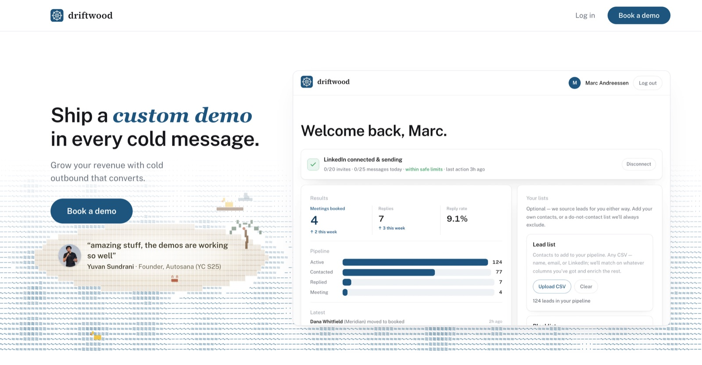
The homepage, the waterline landing at the foldHome in motion: the sea, the duck, the dashboard windowThe case-study coverflow deck
Provenance: Driftwood shipped as code, so every value here is copied from it. Shared tokens come from
landing/src/index.css; product tokens from src/pilot/pilot.css and
src/demos/storyboard.css; rules from design/design-language.md and
design/design-rules.md, the project's one rules list. Specimens are rebuilt from those values;
screenshots and clips are the shipped product on its demo account. The sea is a hand-set still of the canvas.